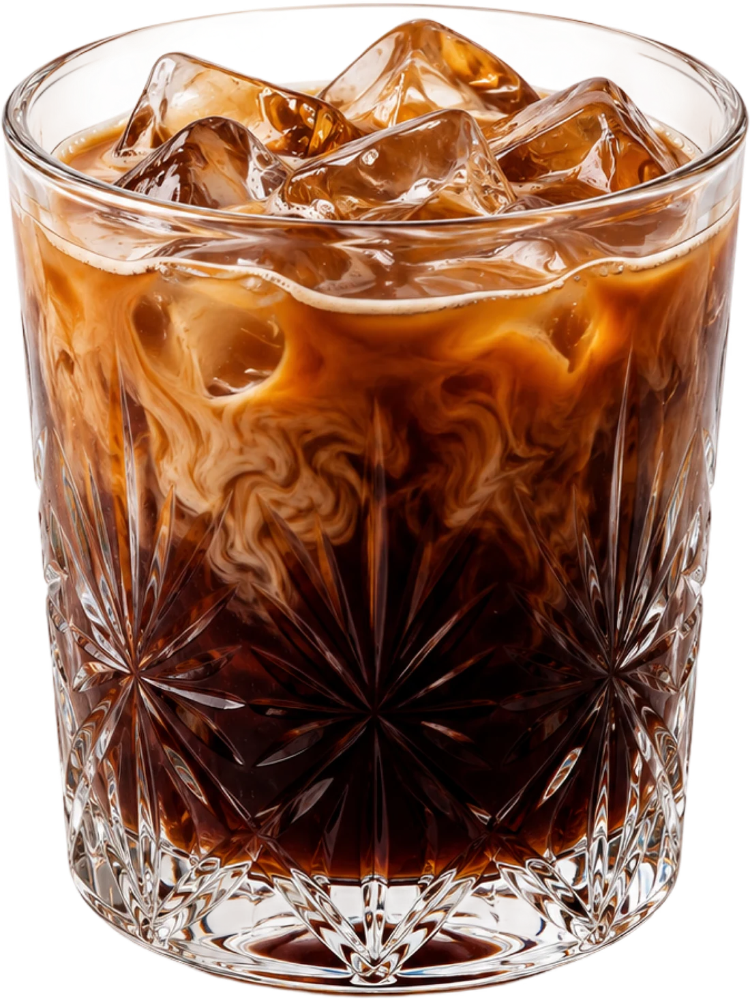

01 — The departure
We don’t make ordinary coffee.
Parallel moves past origins and roast profiles into wavelengths, moods and sensory frequencies. A collection designed to feel less like a routine and more like a shift in state.

Blueberry
Salted caramel
Fresh mint
Mango